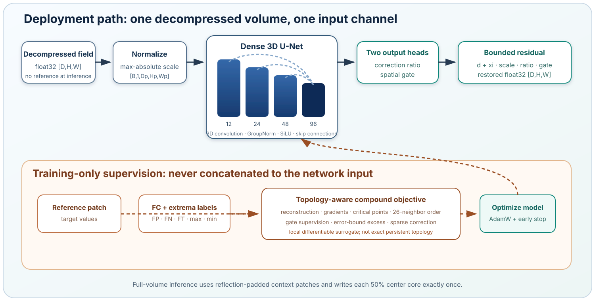
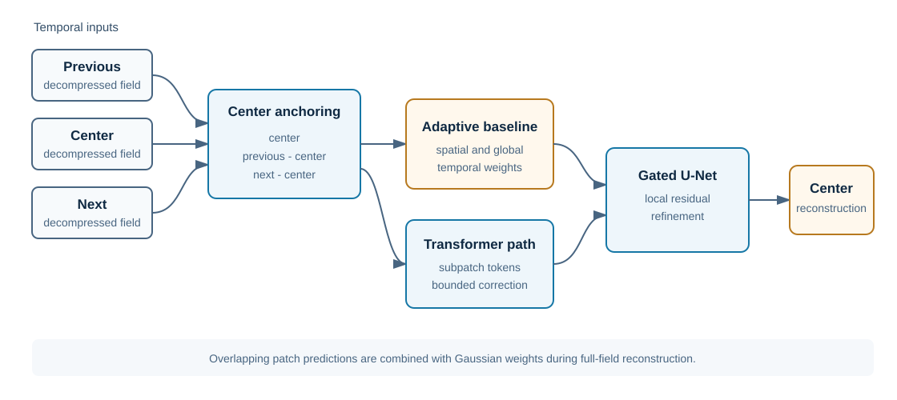

3D scalar fields
DenseTopo-UNet
A gated residual 3D U-Net for restoring one already decompressed volume with topology-aware training supervision and tiled full-volume inference.
PI and Point of Contact
PI and Point of Contact Yang Zhang (Lead PI, Miami University)
Department of Computer Science and Software Engineerning
Miami University
zhang981 AT miamioh.edu
Xin Liang (PI, Oregon State University)
Award overview
Error-bounded lossy compression can reduce data movement and storage, while compression artifacts can affect downstream numerical and topological analysis. This program brings together complementary 2D temporal reconstruction, 3D topology-oriented restoration, and quantization-aware interpolation directions.
The portfolio distinguishes two implementation-backed neural software efforts from one publication-backed interpolation effort. Each is presented with its own evidence boundary; the site does not infer shared benchmark, generalization, or performance results.
Current research
3D scalar fields
A gated residual 3D U-Net for restoring one already decompressed volume with topology-aware training supervision and tiled full-volume inference.

2D scientific fields
A temporal reconstruction method using three adjacent decompressed fields, an adaptive baseline, patch-transformer correction, gated U-Net refinement, and overlapping full-field reconstruction.
Pre-quantization compressors
An IPDPS 2026 research effort, with Pu Jiao as first author, that studies artifacts in pre-quantization-based scientific data compressors and addresses them through quantization-aware interpolation.
Project 01
How can a neural post-processing model edit one decompressed 3D scalar field while reserving reference and topology information for training supervision?
DenseTopo-UNet takes one decompressed scalar volume at inference. Its gated residual 3D U-Net predicts a signed correction and spatial gate; reference values and topology labels are used during training, not as inference inputs.
Alpha research software · evaluation pending
DenseTopo-UNet repository DenseTopo-UNet architecture documentation DenseTopo-UNet usage documentation

Project 02
How can temporal context guide reconstruction of a decompressed 2D center field?
PTU-Net forms center-anchored features from three temporally adjacent decompressed fields. It combines an adaptive temporal baseline, patch-transformer correction, and a gated U-Net refinement before reconstructing a full field from overlapping patches.
Alpha research software · evaluation pending
PTU-Net repository PTU-Net architecture documentation PTU-Net usage documentation

Project 03
How can quantization information guide artifact mitigation for pre-quantization-based scientific data compressors?
This publication-backed effort characterizes compression artifacts through the relationship between quantization indices and compression error, then applies quantization-aware interpolation to improve reconstructed scientific data.
Peer-reviewed publication · IPDPS 2026
Shared research vision
| Dimension | DenseTopo-UNet | PTU-Net | Quantization-Aware Interpolation |
|---|---|---|---|
| Research context | 3D scalar fields | 2D scientific fields | Pre-quantization-based scientific data compressors |
| Portfolio evidence | Alpha research software · evaluation pending | Alpha research software · evaluation pending | Peer-reviewed IPDPS 2026 publication |
| Primary artifact focus | False critical-point topology | Temporal and local reconstruction | Artifacts in pre-quantization-based compressors |
| Technical framing | Gated residual 3D U-Net | Temporal baseline + transformer + gated U-Net | Quantization-aware interpolation |
These categories describe research scope and implementation design, not comparative performance.
Team